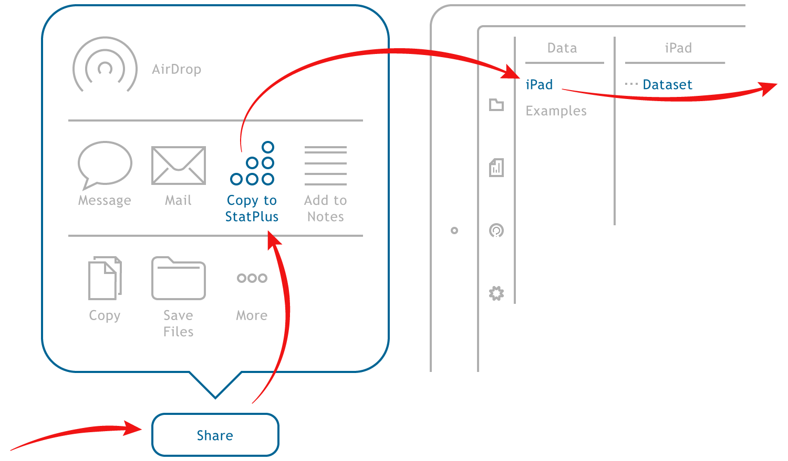
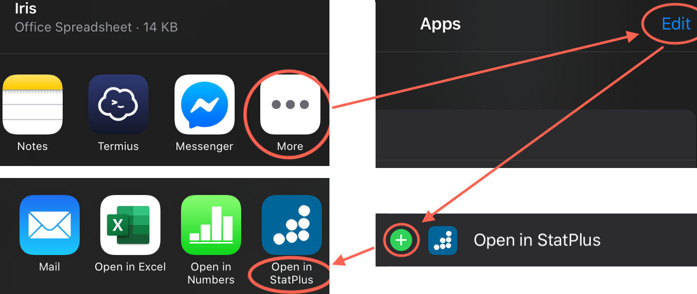
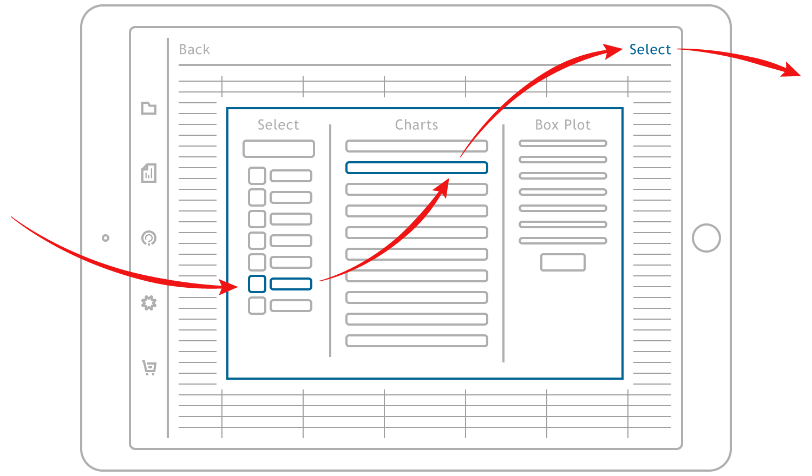
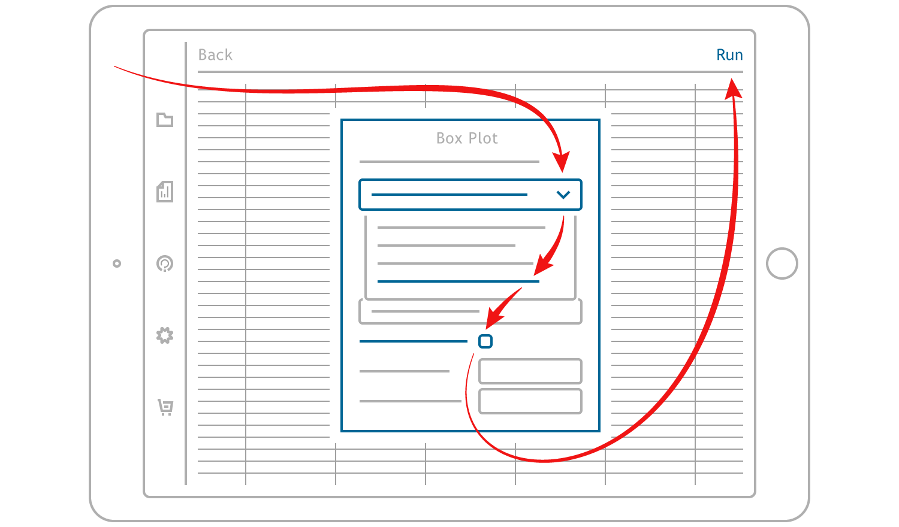
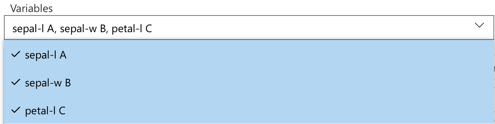
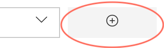
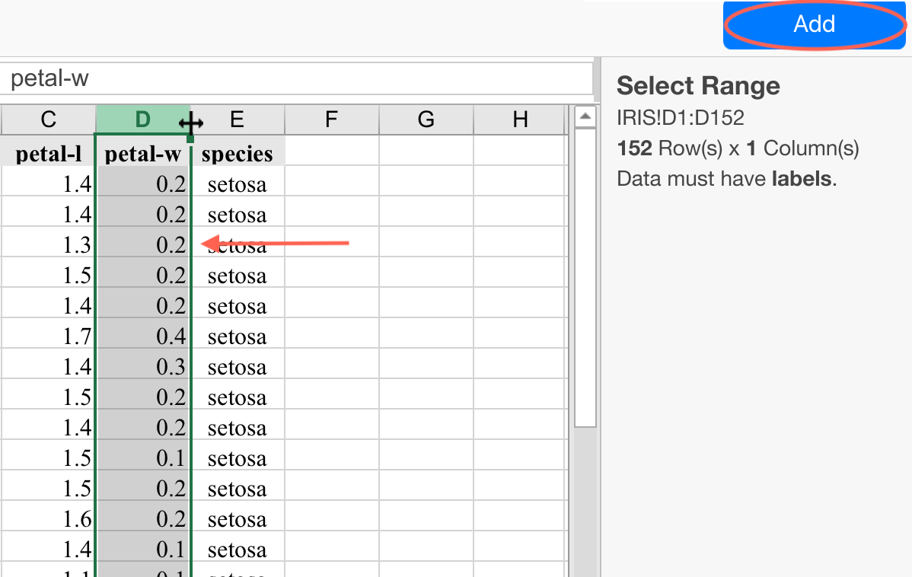
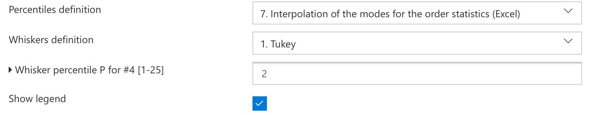
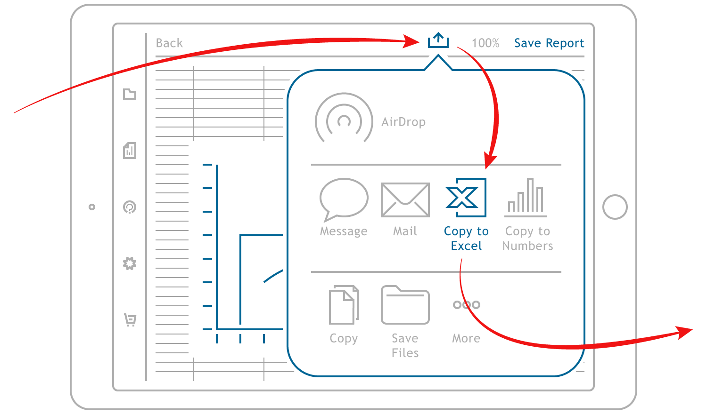

Get Started with StatPlus for iOS
This guide shows how to import your data to StatPlus, perform an analysis, save and share results in a few simple steps.
Requirements
StatPlus for iOS supports all models of iPad and iPhone running iOS 11 or later (iOS 13 and iPadOS are fully supported).
Approx. 4m30s to read this guide.
Supported file formats
Import:
Microsoft Excel 2007-2019 (.xlsx), Microsoft Excel 97-2004 (.xls), Comma-separated values (.csv or .txt), Tab-delimited text (.tab or .tsv), OpenDocument Spreadsheet (.ods), StatPlus:mac documents.
Export (with charts):
Microsoft Excel 2007-2019 (.xlsx), StatPlus:mac documents.
To perform an analysis, please follow these steps:
-
We just need the numbers
When it comes time to crunch the numbers, you need the numbers. Typical ways to load your data into StatPlus are: import data from another program such as Excel (look for a Share command), open existing StatPlus (for Mac) document or create a new dataset.Export your data as a Microsoft Excel document and open data with StatPlus.
Microsoft Excel 2007-2019 document file format (files with .XLSX extension or Office Open XML document) is probably the most popular spreadsheet file format today. You can export data in this file format from Apple Numbers, Google Sheets, OpenOffice/LibreOffice Calc, not to mention the Microsoft Excel app.Export your data as a text document - CSV (Comma-Separated Values) or TSV (Tab-Separated Values).
Both file formats are just delimited text files that use either commas (CSV) or tabs (TSV) as delimiters to separate values. A text file contains only one sheet per file and does not contain any formatting metadata, but while the format is as old as the hills (we mean mainframe computers from the early 1970s) and it is still very popular for exporting data from a database or an open data catalog (like data.gov).Import StatPlus:mac document
If you have documents created with StatPlus:mac built-in spreadsheet you can transfer documents from the desktop app using AirDrop, or a cloud storage - iCloud, Dropbox, Google Drive, OneDrive, and use the same "Copy to StatPlus" ("Open in StatPlus") command.Create a new dataset
Open the Data screen, select the iPad folder and tap the blue "+" button located at the top-right corner - you will be prompted to enter the name of a new document. Confirm name (tap "OK") to create an empty document. To paste data from the clipboard - tap on a cell and hold for a moment, you will see the Copy-and-Paste menu popup. This way you can run an analysis for data from a website or an email.Open a sample dataset
Sample datasets can be found in the Examples folder at the Data view. Select a dataset to copy it to the iPad folder and start an analysis.

If you do not see the Copy to StatPlus or Open in StatPlus buttons in the "Share" dialog: swipe the apps list all the way right, tap the More button, in the "Apps" dialog tap the "Edit" button in the top-right corner, scroll down until the Copy to StatPlus or Open in StatPlus commands and tap the plus sign in a green circle, finally tap "Done" twice.
Open data in the spreadsheet
When you select a dataset from the Data screen the spreadsheet view will appear. The spreadsheet view allows to review and edit data before analysis. To proceed with an analysis method tap the Commands button at the right-top corner and the command selection dialog will appear.Select a command
All the analysis commands are grouped into eight categories - basic statistics, analysis of variance and multivariate analysis, regression analysis, nonparametric statistics, time series analysis, survival analysis, data processing methods and data visualization methods (charts). You can use the search field (top-left corner of the dialog) to run a search in the descriptions of the analysis methods. Check the Subcription chapter for subscriptions comparison.
Select an analysis command from the command selection dialog and tap the Select button to proceed. The Help button opens the manual chapter for the selected command.

Define Input Variables and Options
When you select a command the data input window will appear. To select variables (cell range, column or several columns) for analysis you can either use the list of columns of the current sheet or the button at the right side of an input field. When done check the command options at the lower part of the data input dialog. Finally, tap the Run button when you are done with defining data and options for the command.
The easiest way to work with data is to have variables arranged in columns with labels (headers) in the first row.
a) Select columns with variables from the list.
This way, you can quickly select non-adjacent columns and columns with hundreds of rows. Use the Columns for list to change the active sheet.

b) Select a range.
This way, you can select any range of cells, such as B2:F35 or F4:M61.
Tap the button in the input field.

The spreadsheet will be activated, and you will be able to select a range.

Select the range and tap the Add button at the top-right corner to add the selected range as the data source of the command variable.
Please be sure to select a range with labels in the first row if the "Data has headers" option is selected.If you selected the wrong range or column - tap the "x" button (to the right of the "Add Range" button) to clear the input field.
Regardless of the way you selected variables - please check if the "Data has (no) headers in the first row" option has the correct value. If the data range has no labels (headers) in the first row - please be sure to select "Data has no headers" option..Check the options
For example, to add a histogram to the Descriptive Statistics report, check the Plot histogram and Overlay histogram with normal curve options in the Options panel. The options vary depending on the selected command.

Get results
When you are done with data input - tap the Run button and get a data analysis report. From this view you can save the report (saved reports are available from the Reports screen) or export it as an Excel document in one tap using the Share button.

For some commands, like data sampling or stack/unstack commands, the report can be used as input data for another command - in this case you will see Use As Data button: tap this button to move contents of the report to the input spreadsheet for analysis.
App preferences
If you want to change the default font for reports, default alpha value, or how missing values are removed, use the Preferences button to open the app's preferences dialog. Details for each item of the Preferences dialog box are covered here.Support
If you have any questions or issues, please do not hesitate to contact us - use the blue Help button at the bottom-right corner of this page or open a ticket with our support team.